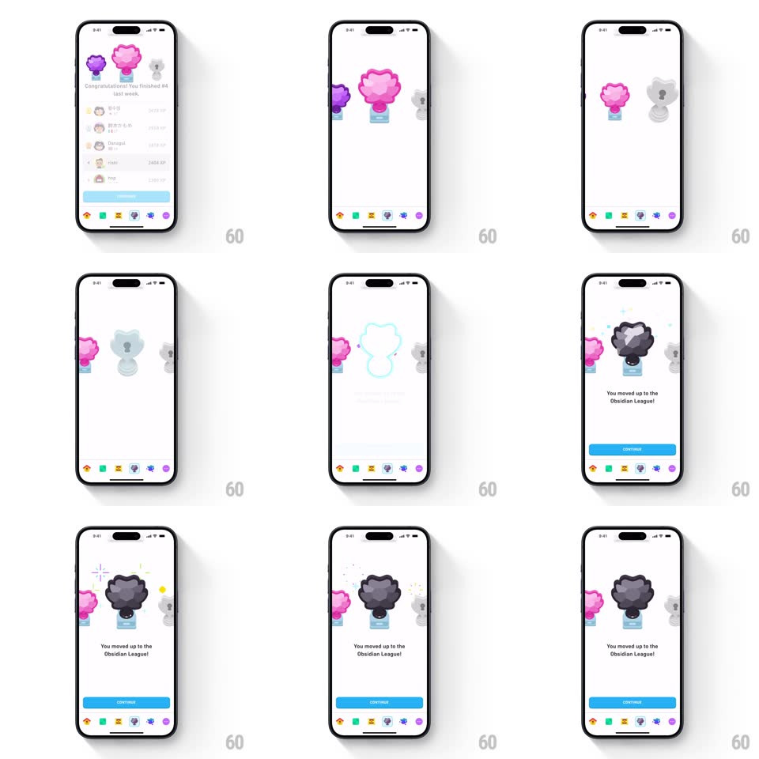

Media
Frame-by-frame

Rebuild this animation 1:1: Duolingo's Obsidian League reveal - the leaderboard slides away, the pink trophy steps aside, and the obsidian trophy materializes with a glow and confetti as "You moved up to the Obsidian League!" lands.

Rebuild this animation 1:1: Duolingo's Obsidian League reveal - the leaderboard slides away, the pink trophy steps aside, and the obsidian trophy materializes with a glow and confetti as "You moved up to the Obsidian League!" lands.
## Integration
Integration: stack-agnostic spec - springs given as stiffness/damping, timed motions as duration + curve; map every value to your framework and animation library of choice.
## Scene
The weekly results screen ("Congratulations! You finished #4 last week", ranked list, CONTINUE) with a trio of league trophies on top. The reveal stage centers one pedestal slot between the pink and grey trophies.
## Motion spec
Pattern: multi-stage trophy reveal, ~2.2s.
- Exit: the list and copy slide down and fade (350ms) leaving the trophy stage.
- Setup: the pink trophy slides left and dims (300ms) as a grey silhouette with a lock sits center.
- Materialize: the silhouette flashes (100ms) and the obsidian trophy scales in (spring ~380/16, 450ms) with a bright outline glow that sweeps its edge (300ms) and confetti bursting from behind (20 pieces, 700ms, gravity).
- Copy: "You moved up to the Obsidian League!" fades up 10px (300ms); CONTINUE slides up (300ms, +100ms).
- Idle: the trophy holds a slow glow pulse (2.5s).
## Calibration
- Confetti emits behind the trophy, not over its face.
- The lock silhouette is visible long enough to register (~400ms) before the flash.
## Reduced motion
The obsidian trophy fades in; no confetti.
## Don't miss
- The reveal is a transformation in place - no new trophy slides in from off-screen.
- The glow sweeps the outline once, then settles into the idle pulse.